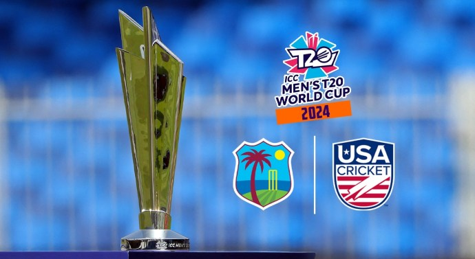

The 2024 ICC Men's T20 World Cup will be the 9th edition of the T20 World Cup, a biennial Twenty20 International (T20I) tournament contested by men's national teams and organised by International Cricket Council (ICC). It is scheduled to be hosted by the West Indies and the United States from 4 June to 30 June 2024. It will be the first ICC World Cup tournament to feature matches played in the United States.
